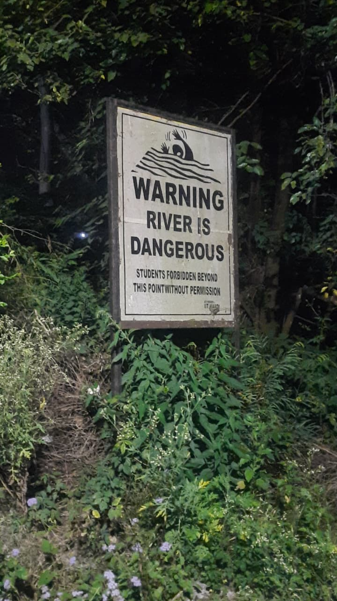
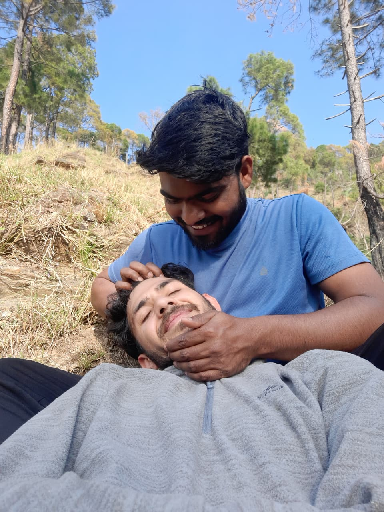
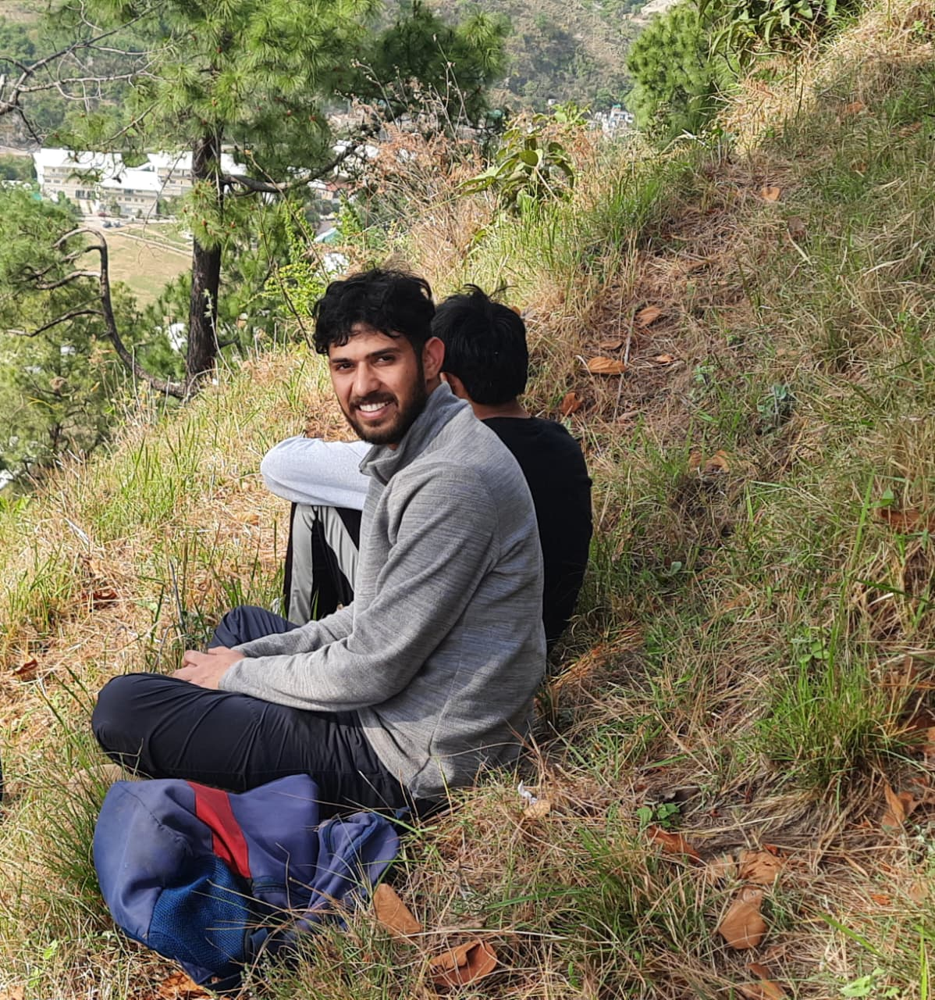
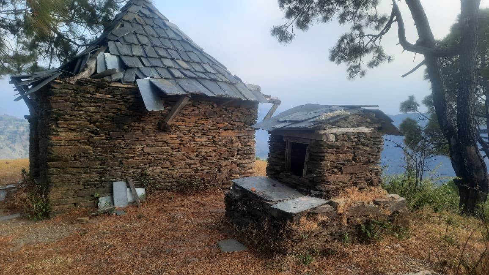
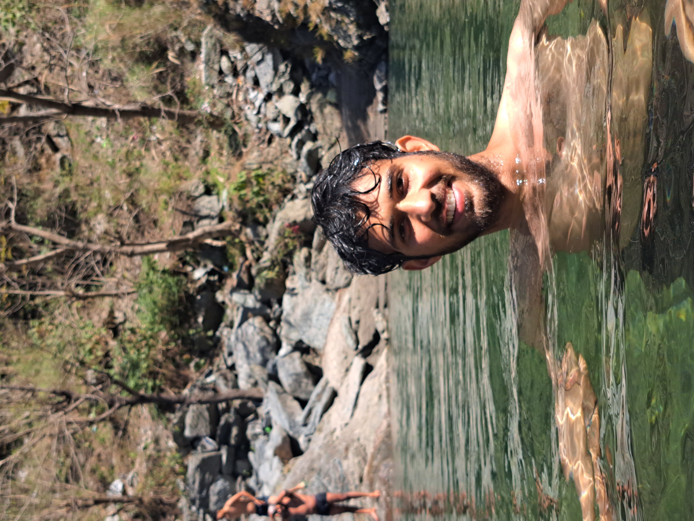
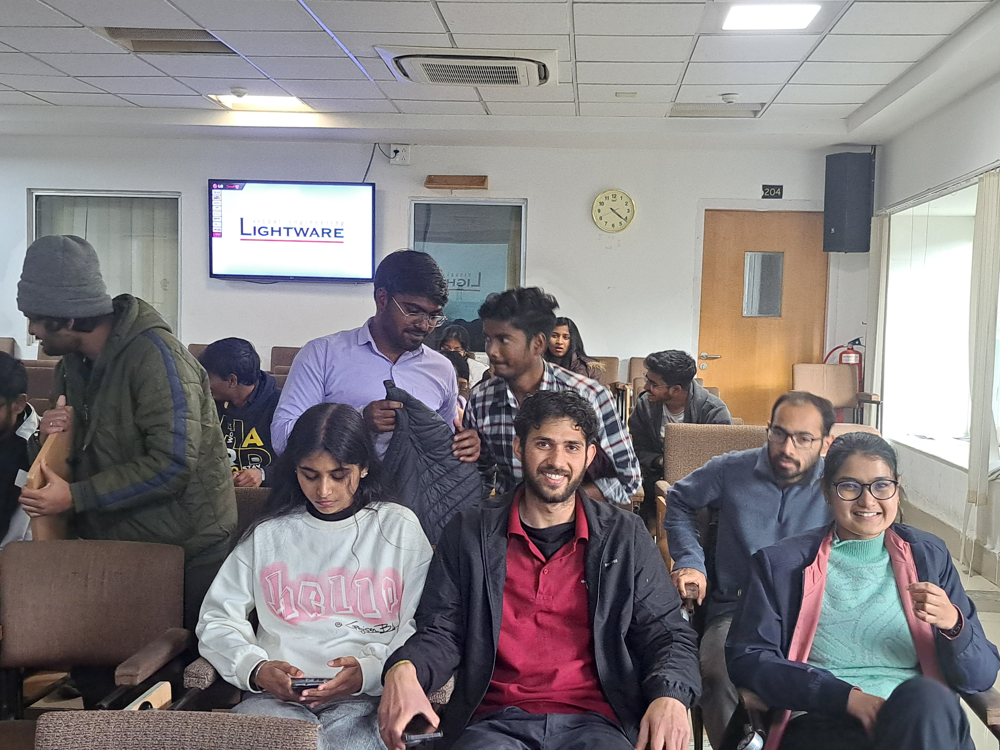

River Stream
The constant flow of the river reminds me of the persistence required in research. Calm on the surface, but full of complex dynamics underneath.
A curated collection of experiments, field work, and observations.

The constant flow of the river reminds me of the persistence required in research. Calm on the surface, but full of complex dynamics underneath.

We reached at this point after an hour of trekking, we were convinced it would take just ten more minutes—only to discover another mountain ahead. We finally reached after two hours from there.

Jeetu, me, and a few glimpses of the campus. Captured by Pradeep, resting after completing the starting trail.

Temple at the top. Khani Peak. Gradient breeze hitting us, sweat cooling, exhausted. Eating the flowers, eating anything. Highs. Tops. Other peaks sharp and clear. Seeing everything. Everything, but Campus.

This is the Uhl River — the chilled one. Walls of water. The pressure of it against the body. That freezing impact almost feels like a glimpse of the ultimate truth of what comes afterwards, especially after the recent incident at this very place. The falling temperature is perhaps the only clue.

Two teams — Tushar, Baldeep, and I; and Rohan, Pradeep, and Deepak — joined the treasure hunt organised by the Physics Club at IIT Mandi. We secured first and second place and won a ₹1900 restaurant voucher. It really was fun.
The constant flow of the river reminds me of the persistence required in research. Calm on the surface, but full of complex dynamics underneath.